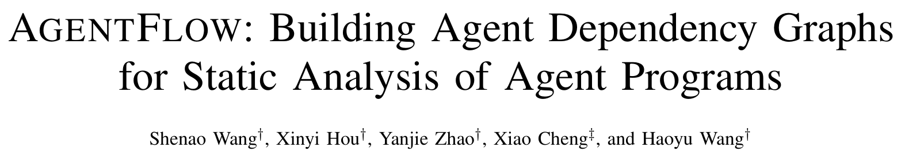
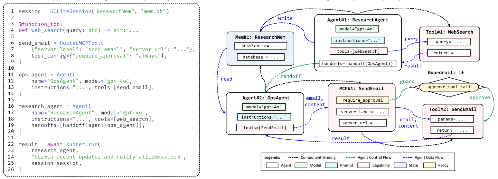
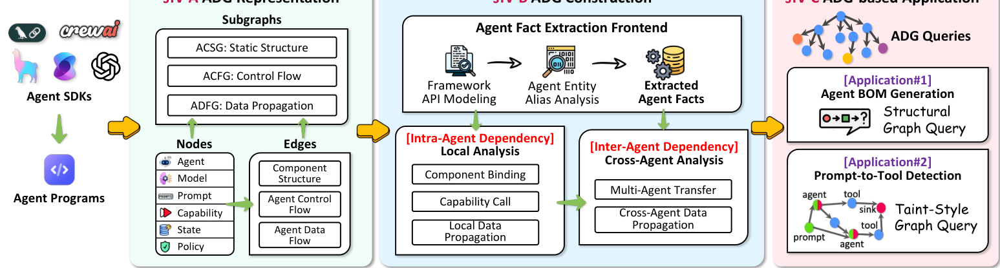
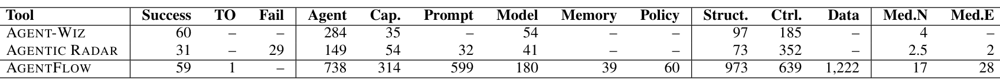
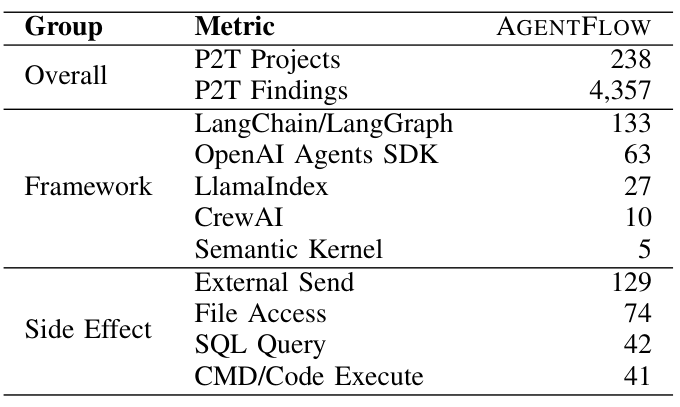

本文看点
01
首个Agent程序静态分析器
02
框架无关的Agent依赖图
03
5399程序揪238处风险
01
PAPER INFO
论文信息
【论文题目】AGENTFLOW: Building Agent Dependency Graphs for Static Analysis of Agent Programs
【论文链接】https://arxiv.org/abs/2607.01640
【作者团队】华中科技大学、麦考瑞大学

— 论文题头
这是一篇提出新方法的论文，来自华中科技大学（Haoyu Wang 团队，长期做 LLM 供应链与 Agent 安全）与麦考瑞大学。它盯住一个正在爆发但工具还没跟上的场景：LLM Agent 现在越来越多是写在框架上的源代码程序，可我们竟然没有一个能看懂它依赖关系的静态分析器。 AGENTFLOW 就是来补这个空缺的第一个工具。
02
OVERVIEW
导读
先把问题讲清楚。你用 LangGraph、OpenAI Agents SDK、CrewAI 这类框架写一个 Agent 应用，本质上是在写普通的宿主语言代码（Python）。但这段代码里有一类传统程序没有的依赖，作者称之为"Agent 依赖"：一个 `@function_tool` 装饰器把普通函数变成 Agent 能调的工具，一个 `handoff()` 声明允许 Agent 之间交接控制权，一个共享的 `session` 让信息在多个 Agent 间流动，一个 `require_approval` 策略给某个动作加了审批闸门。这些依赖是框架语义赋予的，不是普通的函数调用或变量赋值。
问题就在这：传统静态分析追踪的是"函数调用了谁、变量流向哪"，对这些框架语义几乎是全盲的；而现有的 SBOM / AI-BOM 工具只会清点"用了哪些包、哪些模型"，看不到这些组件之间是怎么连起来的。于是一个很关键的安全问题没法回答：用户输入的提示词，会不会顺着这些隐藏的依赖，一路流到一个能发邮件、能执行命令的危险工具？
AGENTFLOW 的思路是：先把 Agent 程序还原成一张能显式表达这些依赖的图，再在图上做分析。
03
PAINPOINT
痛点：一段普通代码，藏着一张看不见的依赖网
看论文的这个动机例子，一眼就懂问题在哪：

— 图1：左边是一段 OpenAI-Agent-SDK 风格的代码（一个函数工具 web_search、一个托管 MCP 工具 send_email、两个 Agent、一个共享 session、一个 Agent 到 Agent 的 handoff）；右边是 AGENTFLOW 还原出的 Agent 依赖图。代码里看似普通的 tools=[...]、handoff(...)、session=session，在图里变成了 Agent 到工具的控制流、Agent 到 Agent 的交接、跨 Agent 的共享状态，还标出了 send_email 上那道 require_approval 审批闸门
左边这 26 行代码，用传统眼光看就是几个函数定义和一次 `Runner.run`。但右边这张图揭示了真相：`ResearchAgent` 可以 handoff 给 `OpsAgent`，`OpsAgent` 手里握着能发邮件的 `SendEmail`（一个 MCP 工具），而用户那句"搜索最新进展并通知 alice@xxx.com"是一段不可信的提示词。它会不会经由 handoff 一路流到发邮件的能力上、把不该发的内容发出去？发邮件那道 `require_approval` 闸门到底管不管得住？这些问题，只有把程序还原成这张图才能回答，而代码本身、传统调用图、数据流图都表达不出来。
04
INSIGHT
核心洞察：把框架语义，抽象成一张与框架无关的图
传统静态分析追的是"函数调用了谁、变量流向哪"；但 Agent 程序真正的行为，藏在 handoff 声明、工具装饰器、共享 session 这些框架语义里。AGENTFLOW 的核心洞察是：把这些五花八门、各框架各写法的语义，统一抽象成一张与框架无关的"Agent 依赖图"（Agent Dependency Graph, ADG），让隐藏的依赖变得显式、可查询、可分析。
这张图的设计很讲究。节点是六类 Agent 世界的一等公民：Agent、模型、提示词、能力（工具/MCP/技能）、记忆状态、控制策略。边分三种依赖：组件绑定（谁装配了谁）、控制流（执行权怎么在 Agent 和工具间转移，含 handoff）、数据流（信息怎么经提示词、参数、返回值、共享内存传播）。因为 Agent 行为部分由大模型的输出决定、无法预测唯一路径，这张图刻意做成过近似：它画出程序结构和框架语义所允许的全部可能依赖，而不是某一次具体执行。
关键在于"与框架无关"：不管你用的是 LangGraph 的图节点、OpenAI 的 `handoff`、还是 CrewAI 的委派，都被归一化成同一张 ADG。这样一套分析逻辑就能吃下所有主流框架。
05
METHOD
方法：AGENTFLOW 三步把图建出来

— 图2：AGENTFLOW 总览。左（ADG 表示）：把 Agent SDK 程序抽象成三张子图（静态结构 ACSG、控制流 ACFG、数据传播 ADFG），节点六类、边三类。中（ADG 构建）：先用"框架事实抽取前端"把各框架 API 建模、做别名分析、抽出归一化的 Agent 事实，再做 Agent 内的本地分析（组件绑定、能力调用、本地数据传播）和 Agent 间的跨 Agent 分析（多智能体转移、跨 Agent 数据传播）。右（应用）：在 ADG 上做图查询，支撑 Agent BOM 生成和提示到工具风险检测两大应用
整条流水线分三步。第一步是框架事实抽取前端：给每个框架的 API 建模（目前覆盖 5 个框架、共 143 个框架构造），用别名分析把"这个变量到底指向哪个 Agent 定义"解析清楚，产出一批与框架无关的"Agent 事实"。第二步是Agent 内本地分析：在每个 Agent 内部把组件绑定、能力调用、本地数据流建起来。第三步是跨 Agent 分析：把 handoff 这类控制转移、共享 session 这类跨 Agent 数据传播接上，形成完整的 ADG。图建好后，两大应用都变成了在图上跑查询：Agent BOM 生成是结构查询，提示到工具检测是污点式查询。
06
RESULTS
实验：图建得比现有工具全得多
作者收集了 AgentZoo，一个含 5399 个真实 Agent 程序的语料（从 GitHub 按五大框架的导入特征抓取），并和两个现有的 Agent 分析工具 Agent-Wiz、Agentic Radar 正面比。结果一目了然：

— 表1：在 60 个采样项目（ADG-Eval）上还原 Agent 依赖的能力对比。AGENTFLOW 成功分析 59/60（1 个超时），每个项目还原的节点覆盖 Agent、能力、提示词、模型、记忆、策略六类都很全；按中位数算，每个项目还原 17 个节点、28 条边，而 Agent-Wiz 只有 4 个节点、0 条边，Agentic Radar 只有 2.5 个节点、2 条边
差距是数量级的：AGENTFLOW 每个程序平均还原 17 个节点、28 条依赖边，而两个现有工具分别只有 4 个节点近乎 0 条边、2.5 个节点 2 条边。原因很清楚：现有工具基于 AST 解析，只能捞出直接、显式的工作流结构（谁调了谁），而 Agent 世界里真正要命的依赖大多是隐式的（handoff、共享状态、策略闸门），它们只有靠 ADG 这套针对框架语义的建模才能被还原出来。尤其"记忆状态"和"控制策略"这两类，现有工具几乎完全捞不到，而它们恰恰是跨 Agent 数据流和审批绕过分析的关键。
Agent BOM 这块也是同样的故事：在 100 个项目上，AGENTFLOW 生成了 2295 个组件加 1008 条绑定关系，而现有的几个 AI-BOM 工具要么只清点资产、要么绑定关系寥寥无几。它们能告诉你"有哪些组件"，却答不出"这些组件是怎么连起来的"，而后者才是安全治理真正需要的。
07
SECURITY
安全落地：提示词到危险工具，揪出 238 处
有了 ADG，最有安全价值的应用是提示到工具（Prompt-to-Tool, P2T）风险检测：追踪提示词里可被用户控制的数据，看它会不会经过重重依赖，最终流入一个能产生外部副作用的敏感能力（发邮件、写文件、跑 SQL、执行命令）。

— 表2：在 5399 个真实 Agent 程序上的 P2T 风险统计。整体揪出 238 个存在风险的项目、4357 处风险点；按框架分布 LangChain/LangGraph 最多（133）；按副作用类型看，最常见的是外部发送（129）、文件访问（74）、SQL 查询（42）、命令或代码执行（41）
结论：5399 个真实 Agent 程序里，238 个存在提示词能一路流到危险工具的通路，占 4.4%。作者人工抽查了 100 份报告，精度 73.0%；而且被判为误报的 27 个里，有 25 个其实污点路径是真的，只是终点那个工具（比如只读的 SQL、受限的计算器）没那么危险，说明只要把汇聚点的读写语义刻画得更细，精度还能再上一个台阶。副作用分布也很说明问题：最常见的风险是"把数据发到外部"，这正是 Agent 时代数据外泄的主通道。
在性能上，AGENTFLOW 处理一个程序的中位耗时 14 秒、95 分位 164 秒，生成的图中位 208 节点/206 边，能扩展到数千个真实程序做批量审计。
08
TAKEAWAYS
启发与点评
对研究者：这篇的价值在于给"Agent 程序分析"立了一个正确的抽象层。此前大家要么沿用传统程序分析（盯代码级的调用和数据流，漏掉框架语义），要么套 SBOM（只清点资产，没有关系），都没打在点上。ADG 的巧思是认清了"Agent 依赖是框架语义赋予的、且必须做成与框架无关的中间表示"，于是一套分析能通吃五个框架、143 种构造。它更大的意义是把 ADG 定位成一个可复用的分析地基：论文只演示了 BOM 和 P2T 两个应用，但同一张图上还能做多智能体合谋检测、不安全工具组合分析、失控的 Agent 循环检测等一大类分析。这也和它的过近似设计呼应，ADG 负责把可疑的高危路径先圈出来，后续再用定向 fuzzing 等动态手段去坐实，是"静态圈定 + 动态验证"的天然分工。
对从业者：两个能立刻用的判断。其一，审 Agent 应用别只跑代码扫描器和 SBOM：你的提示词到危险工具之间的通路，藏在 handoff、共享 session、工具装饰器这些框架语义里，普通静态分析和资产清单都照不出来，得靠这种针对 Agent 语义的依赖分析。其二，盯紧那道"审批闸门"是否真的挡在路径上：论文里 `require_approval` 这类策略是控制提示注入危害的最后一关，而它到底有没有覆盖住每一条通往敏感能力的路径，正是 ADG 这类图分析最该回答、也最容易被人忽略的问题。给 Agent 程序上线前拉一张依赖图、跑一遍 P2T，成本很低，收益是把 4% 的隐患提前照出来。
一点观察：把这篇放进我们一直在追的 Agent 供应链安全脉络里看，它补的是"看得见"这一环。之前解读的工作分别在讲恶意技能、凭据泄露、设计漏洞，都是在说 Agent 生态里有哪些风险；而这篇给的是一副能把风险显影出来的"眼镜"：你没法治理一个你看不清依赖关系的系统。传统软件供应链安全能成熟，靠的正是 SBOM、调用图这些让依赖可见的基础设施；Agent 供应链要走向成熟，也得先有 ADG 这样一层让"提示词、工具、记忆、策略怎么连在一起"变得可见的地基。这一步迈出去了，后面的检测、治理、防御才有立足之处。